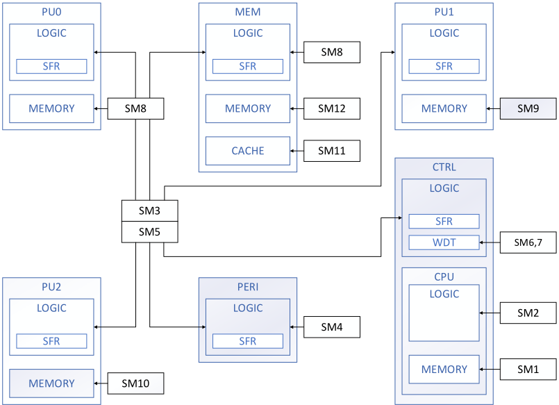
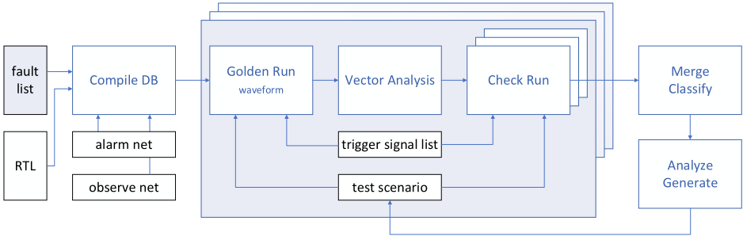
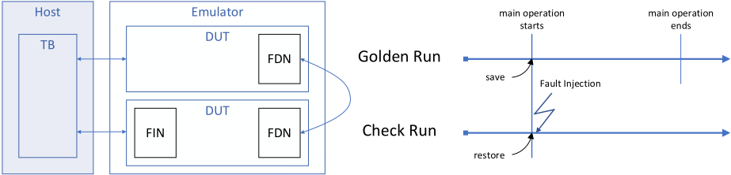
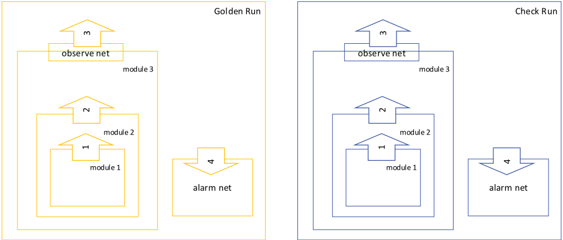

大型汽车IC中内部IP（NPU）的功能安全工作流：通过分析与emulation手段验证SW-based安全机制
论文解决汽车SoC中NPU IP的SW-based安全机制（self-test、CPU STL等）诊断覆盖率（DC）验证难题：fault injection运行时间长、fault campaign期间数据管理负担重。方法上采用Siemens closed-loop工具链（SafetyScope生成fault list、FuSa DB统一管理数据、Veloce Fault App注入），基于emulation的Golden Run/Check Run流程，配合Deadlogic等编译期优化、early termination、状态保存/恢复与并行Check Run压缩runtime，并通过Fast Triage、Codelink Configuration Check、Read Transition Check、Cone-of-influence形式分析与Expert Judgement将UU案例论证为Safe fault，迭代更新测试场景。最终达成ASIL B所需的91.21% DC，SM3收敛为30个高质量短runtime测试场景。该fault campaign流程与Safe fault论证方法对团队FuSa验证和TFMEA/FMEDA论证有直接参考价值。
汽车SoC中NPU等内部IP的SW-based安全机制需通过fault campaign证明满足ISO 26262 ASIL B要求的诊断覆盖率（DC，目标90%，含1.21% margin后需≥91.21%），但fault injection运行时间与fault campaign全程的数据管理开销巨大，如何在可接受时间内完成DC验证并支撑产品认证是论文要解决的核心问题。
基于Siemens closed-loop工具链的emulation fault campaign流程：SafetyScope生成fault list并存入FuSa DB；Compile DB结合RTL与fault detection nets（FDN，分为alarm net与observe net）编译出fault injection net（FIN），并做Deadlogic、Memory: No Read Ports、FinAndFdn三类优化；Veloce Fault App对每个fault net注入SA0/SA1（fault list由N扩展为2N），先执行Golden Run记录FDN参考值，再在emulator上并行执行Check Run比对得到DO/DU/UO/UU四类结果；利用Trigger Signal前的DUT初始状态保存/恢复与early termination进一步缩短runtime；对UU案例采用Fast Triage波形比对、Codelink软硬件同步调试（Configuration Check）、Read Transition Check、COI形式分析与Expert Judgement进行Safe fault分类，迭代更新测试场景直至DC达标；并基于FIT rate分布选择必选SM（SM3期望DC 91.21%，SM1/SM2期望DC 60%）并按逻辑/存储部分加权计算整体DC。
达成ASIL B所需的目标DC 91.21%（90% + 1.21% margin of error）
SM3（self-test）最终测试套件收敛为30个高效率、低runtime的优化测试场景
FuSa DB中N个fault net经Compile DB后输出2N个fault（每个net分别注入SA0与SA1）
SM1、SM2（CPU部分）期望DC设为60%即可满足整体加权DC；SM1使用STL与custom test scenarios，SM2仅使用STL
通过Deadlogic、Memory: No Read Ports、FinAndFdn三类编译期优化跳过无需注入的fault以提升runtime性能
区别于以往主要用simulation流程对存储器类安全机制做fault campaign，本文将emulation（Veloce）fault campaign应用于SW-based安全机制，利用emulation在长场景、大规模fault list下的runtime优势；并给出一套针对UU案例的系统化debug与Safe fault论证方法（Fast Triage、Codelink Configuration Check、Read Transition Check、COI分析、Expert Judgement），以及基于FIT rate分布分配各block期望DC、迭代更新测试场景直至收敛的完整workflow。
相关度级别：high
命中能力域：2.5 功能安全与安全机制 | 2.6 Fault simulation/Z01X/TFMEA
理由：论文直接命中2.5域核心技术：ISO 26262/ASIL B开发、DC/SPFM指标、安全机制验证、Safe fault分类与FMEDA metrics计算；同时命中2.6域：基于功能stimulus的fault injection、fault grading、detectability分析与FMEDA/TFMEA论证关联。虽然注入载体是emulation（Veloce）而非团队使用的Z01X功能仿真，但fault campaign流程、UU案例debug与Safe fault证据链、基于FIT rate分布的DC目标分配策略可直接迁移到团队IP的FuSa验证与TFMEA/FMEDA支撑工作；对2.1/2.2/2.3/2.4/2.7域无直接命中。
建议动作：深入精读并做内部分享
Andrey Likhopoy，三星电子，韩国，a.likhopoy@samsung.com
Sangkyu Park，三星电子，韩国，sangq.park@samsung.com
Hyeonuk Noh，三星电子，韩国，hyeonuk.noh@samsung.com
Wonil Cho，三星电子，韩国，wonil.cho@samsung.com
Inhwan Kim，Siemens EDA，韩国，inhwan.kim@siemens.com
Robert Serphillips，Siemens EDA，美国，robert.serphillips@siemens.com
Chanjin Kim，Siemens EDA，韩国，chanjin.kim@siemens.com
Justin Lee，Siemens EDA，韩国，justinlee@siemens.com
James Kim，Siemens EDA，韩国，james.kim@siemens.com
Sougata Bhattacharjee，三星半导体印度研究院（SSIR），印度，sougata.b@samsung.com Gulshan Kumar Sharma，三星半导体印度研究院（SSIR），印度，gks.92@samsung.com Akshaya Kumar Jain，三星半导体印度研究院（SSIR），印度，akshaya.jain@samsung.com
摘要 - 随着现代汽车中使用的半导体数量急剧增加，安全性正成为汽车半导体生命周期中的主导因素。实现期望的安全水平，因故障注入的运行时间以及整个故障注入活动（fault campaign）期间的数据管理而负担沉重。本文描述了数据管理与故障注入运行时间优化的流程，这些优化缩短了达到期望安全水平以及完成产品认证所需的时间。本文通过将硬件仿真（emulation）用于基于软件（SW-based）的安全机制，给出了大型汽车集成电路（IC）中内部IP（神经网络处理单元，NPU）的故障注入活动流程案例研究。
根据 ISO 26262 标准，功能安全是指不存在由电子系统功能异常行为引发的危害所导致的不合理风险。安全经理负责开展危害分析与风险评估（HARA）。在此阶段，依据严重度分类（如潜在伤害（S））、运行场景的发生概率（E）以及驾驶员或其他交通参与者的可控性（C）[1]，为每个危害事件（HE）分配汽车安全完整性等级（ASIL）。随后，针对每个 HE，安全经理定义安全目标，并设定实现这些安全目标所需的功能安全要求。在产品开发过程中，功能安全要求逐级细化为技术安全要求，并进一步细化为硬件（HW）安全要求和软件（SW）安全要求。
基于使用假设，汽车片上系统（SoC）中对某一安全目标有贡献的某个 IP 会被分配所需的安全要求。安全机制（SM）被集成到 IP 中，用于验证相关的安全要求。
为证明 SM 的有效性，需对诊断覆盖率（DC）进行测量。DC 表示 SM 发现故障的能力，其计算方法是用 SM 检测到的故障数量除以电子系统中的故障总数。ASIL 决定了单点故障度量（SPFM）以及 SM 针对单点故障和残余故障所提供的覆盖水平。例如，为满足 ASIL B，要求 SPFM 大于或等于 90%（表 I）。
| ASIL A | ASIL B | ASIL C | ASIL D | |
|---|---|---|---|---|
| SPFM | Not Applicable | ≥ 90% | ≥ 97% | ≥ 99% |
| | ASIL A | ASIL B | ASIL C | ASIL D |
在定义了包含预期 DC 和预期保护区域的 SM 信息之后，故障战役（FC）流程将继续进行报警网（alarm net）和观测网（observe net）的识别。下一步是确定并生成测试场景，随后进行故障注入。故障注入的工作流程包含三个步骤：1）生成故障列表，2）注入故障列表，3）报告度量指标。
Siemens 为上述所有步骤提供了顺畅的流程，并在整个过程中使用单一的功能安全数据库（FuSa DB）[2]。
The NPU IP (Fig.1) is a part of an automotive SoC and contributes to safe video sensing.
NPU provides fast and energy-efficient hardware accelerations for AI and ML applications in computer vision, image processing and other domains where state-of-the-art deep learning networks are used. NPU consists of several processing blocks (PU0, PU1, and PU2), memory access block (MEM) and controller block (CTRL).
Safety Island is designed to manage and monitor all of the safety content within the automotive SoC. In particular, Fault Management Unit (FMU) in Safety Island collects faults and reports related safety event information.
The list of SMs (Table II) is defined by Safety Manager in the Statement of Request for Verification.
Typically memory parts are protected by parity or ECC (SM9-SM13). Related fault signals are connected to FMU directly. While logic parts often require SW-based SMs like self-test (SM2, SM3), where a firmware is needed to control the intended function, so the firmware checks the behavior and asserts fault signals.
Majorly FC for SMs protecting memory parts was done using a simulation flow. This paper deals with FC for SW-based SMs which was conducted using an emulation flow.
The goal was to verify the DC defined at the level of 90% (ASIL B). Considering the margin of error of 1.21%, the expected DC should be greater than or equal to 91.21%.
Failures In Time (FIT) rate metric proportional to the number of transistors in the die was used. Based on FIT rate distribution for logic and memory parts of each block inside NPU, the expected DC for each block was estimated. So, it was decided to use SM3 (Table III), SM1, SM2 (Table IV), as mandatory SMs and other SMs as additional as their contribution to the overall DC score is insignificant. For SM3 which protects all blocks the expected DC was set to 91.21%, and for SM1, SM2 which protect CPU inside CTRL block the expected DC set to 60% was sufficient. The final DC for NPU can be calculated by the weighted average of the DCs for all logic and memory parts.

| Type | SM | Part | Description |
|---|---|---|---|
| emulation | SM1 | CPU memory | ECC |
| emulation | SM2 | CPU logic | STL |
| emulation | SM3 | PU0/1/3, MEM, CTRL, PERI | Self-test |
| emulation | SM4 | CTRL, PERI (bus) | Ext mem access |
| emulation | SM5 | SFR of all parts | SFR access |
| emulation | SM6 | CTRL | WDT |
| emulation | SM7 | CTRL | WDT SFR |
| emulation | SM8 | MEM | CRC |
| simulation | SM9 | PU0 memory | Parity |
| simulation | SM10 | PU1 memory | Parity |
| simulation | SM11 | PU2 memory | Parity |
| simulation | SM12 | MEM cache memory | Parity |
| simulation | SM13 | MEM memory | Parity |
| Type | SM | Part | Description |
| Block | FIT rate distribution (%) | Expected DC (%) (≥91.21%) |
|---|---|---|
| PU0 | 31.35 | 96 |
| PU1 | 31.35 | 96 |
| MEM | 17.9 | 90 |
| PU2 | 10.86 | 80 |
| CTRL | 2.04 | 60 |
| PERI | 6.48 | 80 |
| Total | 100 | 91.41 |
| Block | FIT rate distribution (%) | Expected DC (%) (≥91.21%) |
| Part | FIT rate distribution (%) | Expected DC (%) (≥60%) |
|---|---|---|
| CPU memory | 1.02 | 90 |
| CPU logic | 98.98 | 60 |
| Total | 100 | 60.31 |
| Part | FIT rate distribution (%) | Expected DC (%) (≥60%) |
To facilitate the FC for complex SW-related SMs and to make DC verification feasible within achievable time HW assisted verification tools, like an Emulator, are required. Since emulation was one of the options to be used for functional verification of NPU, it is easy to add additional scenarios for the target DC with the existing emulation verification environment. If the target design is big, and the scenarios needs to be long, the emulation FC is the best option in terms of runtime. To set up the environment of the FC, the fault list generation, the fault injection run, and the database for fault list and the results are required. As a few separated steps for the FC are required, Siemens closedloop tool chain is chosen for the NPU FC.
The fault list generated by SafetyScope, the RTL, and the fault detection nets (FDNs) are the inputs to Compile DB [3]. The generated fault list is stored into the FuSa DB. Compilation by Veloce refers the FuSa DB for the fault list, and the file for FDNs. FDNs are those nets whose values are stored during a Golden Run and compared during a Check Run. There are two types of FDNs: alarm and observe net. Alarm net is a signal that SM can recognize when there is a safety violation. Observe net is a signal that Veloce can recognize when there is a safety violation. Veloce Fault App is used to inject fault on the fault list. Finally, the result of the fault injection run is stored into the FuSa DB. Workflow is presented in Fig. 2.

The outputs of the compilation are the fault injection net (FIN), and the blocks synthesized for Veloce emulator. FIN which is an output of compilation will be double of fault nets in FuSa DB because Veloce assigns stuck at zero (SA0) and stuck at one (SA1) on a fault net. Only permanent faults are considered (SA0, SA1). Other fault types like transient faults, etc. are also supported but beyond the scope of this FC. If FuSa DB has N of fault net, the output of fault list from Compile DB will be 2N due to SA0 and SA1 for each fault net. Some faults can be optimized out at this stage.
There are several types that do not require fault injection run. Veloce provides optimization method to increase runtime performance by skipping fault injection run.
如果某个 FIN 的扇出不存在任何读取器，则意味着故障影响无法进一步传播。这类逻辑可以被优化为“死逻辑（Deadlogic）”。
In a design if there is a memory that no address is read anywhere, there would be no way that a design is affected by injecting fault. Memory which is not read anywhere will be optimized as 'Memory:No Read Ports in the memory.' FinAndFdn
If a fault net is defined as FIN and FDN both by user, this fault net will be optimized as 'FinAndFdn Fault.'
IDs are assigned to each FINs after compilation not including the optimized nets. This ID based FIN provides easy fault injection run environment setup.
The FDNs are captured during the execution of the test scenario on the emulator, and the results are saved as the reference values of Golden Run [4]. Golden Run means normal run without a fault impact, so that this run will record all the behavior of FDNs to be reference. Then each fault from the FIN is injected during the execution of the same test scenario and the FDNs for this Check Run are compared against the reference (Fig. 3). As a result of Check Run, the alarm can be Detected or Undetected, the fault can be Observed or Unobserved thus giving four cases: DO, DU, UO and UU. Check Run means run with a fault impact can be observed or detected by comparing them against Golden Run.
As the number of faults to be injected can be huge, Check Runs are executed on the emulator in parallel. At Vector Analysis the fault nodes are checked and nodes with constant values are optimized out from the injected list for this test scenario.
To save runtime more it can achieve the fast fault injection runtime by excluding unnecessary time such as system initialization time. The initial state of DUT before Trigger Signal can be saved for Golden Run and then restored for each Check Run.

During the fault injection run, no additional runtime is necessary after the alarm is detected and the observe net is observed. By applying early termination feature, fast runtime can be also achieved based on the number of DO cases. Finally, the results are merged for all test scenarios for the given SM, then they are classified and used for calculation of the ASIL and FMEDA metrics. If the score is not enough then test scenarios are regenerated and the FC is restarted.
典型的 FC 测试场景包括以下步骤。
否则，可以重复步骤 3-9。
如果 WDT 在 CPU 发送通过或失败中断之前触发，CPU 会发送中断（alarm_hang）。
也有可能 CPU 在所有操作结束后进行一次 CRC 比较。
FC 的测试场景必须满足两个条件：高质量和短运行时间。
高质量意味着，如果某个测试场景不满足上述指标，则应重新生成该场景。为了达到 ASIL B 所要求的大于或等于 90% 的诊断覆盖率（DC），应使测试场景的质量高于用于功能验证的测试场景的签核（sign-off）水平。
另一方面，用于功能验证的测试场景通常以冗余的方式覆盖每个功能，因此运行所有测试场景需要很长时间。然而，FC 的测试场景还应用于实际现场测试中的错误检测。并且这些场景应在短时间内完成，因为它们不应影响实际的软件（SW）运行。
没有简单的方法可以构建理想的测试场景。但存在一种准确且可靠、但缓慢的方法，即通过分析 IP 规格与算法并逐一添加特性来实现。
为了更高效地生成高质量测试场景，可以考虑以下几点。
- 如果性能对系统很重要，则应在系统级定义一个测试场景，以便在性能不满足时能够捕捉到差异。这样，仅导致性能差异的故障就可以在系统级被发现，而 IP 本身则被视为安全的。
在故障覆盖率（FC）中，最重要的部分是为达到目标诊断覆盖率（DC）而进行的结果分析。对于 UU 情况，工程师必须运用专家判断来确定该故障是安全故障，还是需要额外的场景。可以使用软件（SW）和/或硬件（HW）方法来查明故障在系统中如何传播。使用 Codelink 中的 SW 方法时，预期是内核（CPU）的监视器（monitor）可能捕捉到故障传播被隐藏的原因。此外，比较 Golden Run 与 Check Run 之间的波形（Fast Triage）可以作为一种基于 HW 的方法，用于找出故障传播在何处被屏蔽。借助这些调试方法，工程师可以找到调试点并添加更多场景，从而达到预期的 DC。
基于综合信息和向量质量判定为不可注入的网络，已由编译器在 Compile DB（优化网络）中以及通过应用向量分析（VQC）予以滤除。需要基于分辨率报告，对使用可注入网络的故障注入运行进行分类。针对此故障分类（FC），采用以下三种方法：Fast Triage、Configuration check 和 Read transition check。
The main concept of Fast Triage is to find out how the propagation by injected fault cannot be spread out and where the propagation is reached out to the alarm net and the observe net. The result of Fast Triage can be classified as a Safe fault with the Expert Judgement based on the evidence why the fault effect is not propagated. Since Veloce supports the utility to compare two waveforms easily, the deviation between Golden Run and Check Run can be found as long as two waveforms are ready. By comparing the port of hierarchical modules from the fault injection net (FIN) to the alarm net and the observe net (FDN), the deviation can be found. If the deviation between Golden Run and Check Run is found on the output of 'module 2' in Fig. 4 while no deviation is found on the input of the module which has the alarm net, it can be a Safe fault because the fault effect is not propagated to the alarm net. Then, it can be assumed that there is the logic which blocks the effect of fault propagation in 'module 2' or 'module 1.'

This is one of the case why a deviation by fault propagation cannot be found. The deviation on 'out_A' was not found because ' value_A[x][y] ' in Golden Run and Check Run were same with current test scenario (Fig. 5). While there were some toggled values on 'value_A[x][y]' in Golden Run, 'value_A[x][y]' was stuck at one in Check Run. However, when value of the 'value_A[x][y]' in Golden Run was ' 1 ' which is same as the value in Check Run. So, it can be a Safe fault because there was no deviation between Golden Run and Check Run.
assign x = x_val[xxx:yyy]; assign y = y_val; assign out_A = value_A[x][y]; // fault net is value_A[x][y] with SA1
如果内核具有诸如纠错码（ECC）或奇偶校验之类的安全机制，并且在单元上注入了故障，则需要检查配置，确认该安全机制是否已启用。如果对 ARM 内核不熟悉，则很难在波形或软件（SW）代码上进行调试。如果功能安全工程师能够同时访问 SW 代码和同步波形，这将有助于检查配置环境，例如 ECC、奇偶校验和看门狗（watchdog）的使能情况。如果功能安全工程师熟悉波形，则可以通过前后移动波形时间帧来回溯 SW。如果功能安全工程师熟悉 SW，则可以在 SW 上设置断点，从而使波形显示硬件（HW）的当前状态。Codelink 作为 Veloce 的应用程序，可以支持这种方法。
对于在存储单元上注入故障的情况，除非系统从该单元读取数据，否则故障无法向多个接收端传播。为了证明该故障的传播是否会对接收端产生影响，需要验证地址和读地址。以图6为例，可以通过 'enable' 和 'A' 的值来检查读事务。如果在当前测试场景下没有发生事务，则该故障可被视为安全故障（Safe fault），因为注入的故障无法进一步传播。
always@(posedge clk) begin if (enable = 1'b1) Q <= mem[A]; end end
故障覆盖率（FC）需要经过多次迭代才能达到预期的诊断覆盖率（DC）。在每次迭代之后，应当分析 UU 案例、生成测试场景并重新运行 FC。
对神经处理单元（NPU）的架构、数据流和算法进行了分析，并在每次迭代中应用了上述方法（表 V）。具体而言，至少采取了以下步骤。
| DO for iteration, % | DO for iteration, % | DO for iteration, % | DO for iteration, % | DO for iteration, % | ||
|---|---|---|---|---|---|---|
| Block | Valid net (after Compile), % | 1 | 2 | 3 | 4 | 5 |
| PU0 | 100 | 36.7 | 56.7 | 87.15 | 89.08 | 90.26 |
| | | DO for iteration, % | DO for iteration, % | DO for iteration, % | DO for iteration, % | DO for iteration, % |
在更新测试场景之后，采用形式化分析来检查剩余 UU 案例的影响锥（Cone-of-influence, COI）。处于 COI 之外的故障被标记为安全故障（Safe faults）。
随后，为了进一步提升 DC，对剩余的 UU 案例应用了更多的专家判断（Expert Judgement）。
PU2 本身由多个部分组成。为了获得高分，测试场景应覆盖所有这些部分，包括计算核心、存储器、命令调度器、总线以及存储器访问模块。
4) 在对 UU 案例进行进一步分析后，发现对某些寄存器的访问具有特定的模式，因此也将其添加了进去。
| Block | Valid net (after Compile), % | DO for iteration, %.1 | DO for iteration, %.2 | DO for iteration, %.3 | DO for iteration, %.4 | DO for iteration, %.5 | DO for iteration, %.6 | DO for iteration, %.7 | DO for iteration, %.8 |
|---|---|---|---|---|---|---|---|---|---|
| PU2 | 100 | 38.29 | 59.15 | 63.04 | 63.68 | 76.21 | 77.12 | 81.3 | 81.96 |
| Block | Valid net (after Compile), % | DO for iteration, %.1 | DO for iteration, %.2 | DO for iteration, %.3 | DO for iteration, %.4 | DO for iteration, %.5 | DO for iteration, %.6 | DO for iteration, %.7 | DO for iteration, %.8 |
最终的诊断覆盖率（DC）计算方式为：将 DO、DU、Compile（optimized: Dead Logic, No port in mem）、COI 和 Safe 相加求和，再除以总故障列表与 Compile（optimized: FIN=FDN）之差。
SM3 的故障覆盖率（FC）结果如表 VII 所示。SM3 的最终测试套件包含 30 个经过优化的测试场景，具有高效率和低运行时间。
| Block | FC steps.FuSa DB.Fault list ① | FC steps.Compile.Valid net (after Compile) | FC steps.FI run.DU ② | FC steps.FI run.DO ③ | FC steps.FI run.UU (incl. VQC) | FC steps.FI run.UO | Result analysis.Compile (optimized).Dead Logic ④ | Result analysis.Compile (optimized).No port in mem ⑤ | Result analysis.Compile (optimized).FIN = FDN ⑥ | Result analysis.Formal.COI ⑦ | Result analysis.Expert.Safe ⑧ | Result.Expected.FIT rate distr. (%) | Result.Expected.Exp. DC (%) | Result.Final.DC (%) ⑨ |
|---|---|---|---|---|---|---|---|---|---|---|---|---|---|---|
| PU0 | 4694 | 4220 | 0 | 3827 | 281 | 132 | 438 | 16 | 0 | 19 | 227 | 31.35 | 96 | 96.44 |
| PU1 | 4694 | 4220 | 0 | 3827 | 282 | 131 | 438 | 16 | 0 | 19 | 227 | 31.35 | 96 | 96.44 |
| MEM | 4688 | 3472 | 0 | 2392 | 1022 | 58 | 1148 | 0 | 0 | 78 | 316 | 17.9 | 90 | 83.92 |
| PU2 | 4658 | 4064 | 0 | 3331 | 711 | 22 | 522 | 72 | 0 | 21 | 80 | 10.86 | 80 | 86.43 |
| CTRL | 4582 | 2050 | 6 | 235 | 1716 | 93 | 1430 | 1102 | 0 | 131 | 0 | 2.04 | 60 | 63.38 |
| PERI | 4576 | 3058 | 0 | 2151 | 895 | 12 | 1518 | 0 | 0 | 75 | 0 | 6.48 | 80 | 81.82 |
| Total | 100 | 91.41 | 91.49 |
| Block | FC steps.FuSa DB.Fault list ① | FC steps.Compile.Valid net (after Compile) | FC steps.FI run.DU ② | FC steps.FI run.DO ③ | FC steps.FI run.UU (incl. VQC) | FC steps.FI run.UO | Result analysis.Compile (optimized).Dead Logic ④ | Result analysis.Compile (optimized).No port in mem ⑤ | Result analysis.Compile (optimized).FIN = FDN ⑥ | Result analysis.Formal.COI ⑦ | Result analysis.Expert.Safe ⑧ | Result.Expected.FIT rate distr. (%) | Result.Expected.Exp. DC (%) | Result.Final.DC (%) ⑨ |
SM1、SM2（CPU 部分）的 FC 结果如表 VIII 所示。对于 SM1，使用了软件测试库（STL）和自定义测试场景；对于 SM2，仅使用了 STL。通过 Codelink 检查了配置设置的正确性。由于 ARM 提供的测试场景数量有限，我们计划在未来的工作中使用前文提到的基于 Codelink 的调试方法，对剩余的 UU 情况进行额外分析。
| FC steps.FuSa DB | FC steps.Compile | FC steps.FI run | FC steps.FI run | FC steps.FI run | FC steps.FI run | Result analysis.Compile (optimized) | Result analysis.Compile (optimized) | Result analysis.Compile (optimized) | Result analysis.Formal | Result analysis.Expert | Result.Expected | Result.Expected | Result.Final | |
|---|---|---|---|---|---|---|---|---|---|---|---|---|---|---|
| Part | Fault list ① | Valid net (after Compile) | DU ② | DO ③ | UU (incl. VQC) | UO | Dead Logic ④ | No port in mem ⑤ | FIN = FDN ⑥ | COI ⑦ | Safe ⑧ | FIT rate distr. (%) | Exp. DC (%) | DC (%) ⑨ |
| CPU memory | 4696 | 4642 | 320 | 3835 | 486 | 1 | 54 | 0 | 0 | 0 | 0 | 1.02 | 90 | 89.63 |
| CPU logic | 4554 | 4174 | 0 | 2303 | 1818 | 53 | 364 | 0 | 16 | 94 | 0 | 98.98 | 60 | 60.98 |
| Total | 100 | 60.31 | 61.13 |
| | FC steps.FuSa DB | FC steps.Compile | FC steps.FI run | FC steps.FI run | FC steps.FI run | FC steps.FI run | Result analysis.Compile (optimized) | Result analysis.Compile (optimized) | Result analysis.Compile (optimized) | Result analysis.Formal | Result analysis.Expert | Result.Expected | Result.Expected | Result.Final |
本文介绍了采用基于软件（SW）的安全机制（SM）的神经网络处理单元（NPU）IP 的功能安全工作流程。基于 FIT 率分布选择了内部模块及相关 SM。采用了包括通过硬件仿真（emulation）执行的故障注入在内的故障覆盖率（FC）流程。介绍了一种用于高效 UU 分析的调试方法。在每次 FC 迭代中，在对 IP 架构和故障进行详细分析后，对测试场景进行了更新，最终将部分剩余故障归类为安全（Safe）故障。实现了满足 ASIL B 指标所必需的 91.21% 的目标诊断覆盖率（DC）得分。针对 SW 安全验证的测试场景运行时间的进一步优化可纳入未来工作。